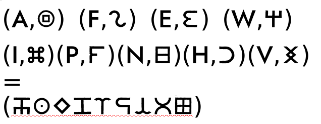

Tired both physically and mentally, your determination to
acquire the legendary artifact keeps you going. This room
has a distinct spiral entrance and right across from the
entrance is the exit door ahead. The challenge this time
is marked on the exit door. After entering the room, you
notice that the other side of the spiral door to the
entrance is entirely made out of crystal-clear mirror.
You realize that though you have started getting the hang
of the new language, all the words seem completely
different.
